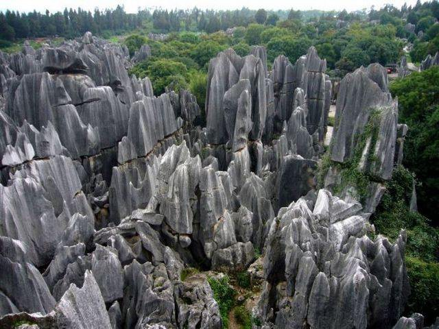

Мои увлечения: прогулки, программирование, разработки, играть в видеоигры, пить чай, пить какао, дружить с Пашей, пить какао с маршмеллоу, смеяться над Лёней, троллитьь Мишу, угарать над смешными людьми, тусоваться
Китайский пейзаж, в котором скалы стоят, словно высокие сосны. При этом скал так много, что это место называют лесом Шилинь. Высокие скалы еще можно сравнить с небоскребами, образующими город.